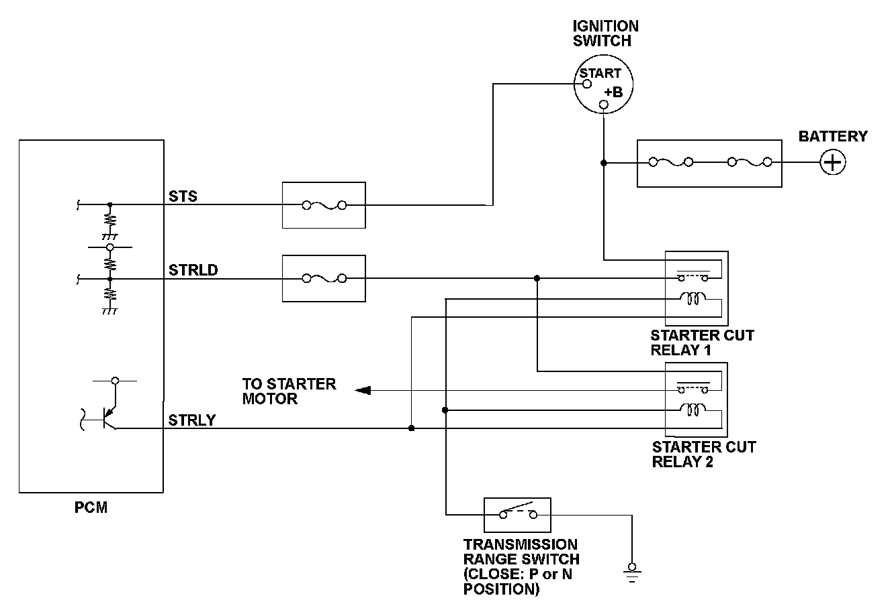
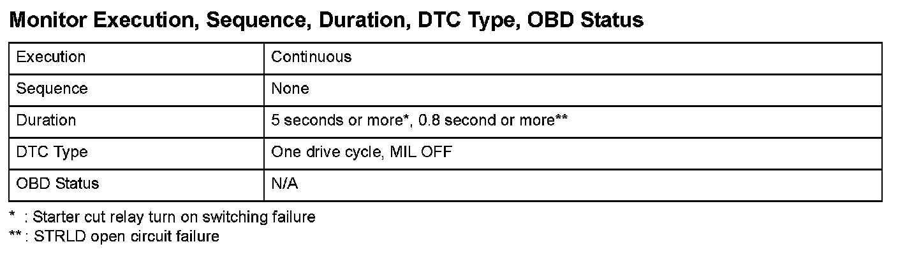
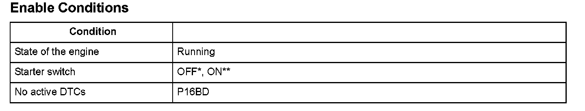

Advanced Diagnostics
DTC P16BE: Starter Cut Relay 1 Malfunction
General Description
To prevent the starter from continuing to rotate due to a switching failure of the starter cut relay, two starter cut relays are connected in series.
When the input voltage of the STRLD terminal exceeds a set voltage even when the starter cut relay output (STRLY) is turned off, the powertrain control module (PCM) detects a starter cut relay 1 turn on switching failure and a DTC is stored. When the starter is turned on, but the STRLD terminal input voltage does not exceed the upper or lower limit, a simultaneous failure of both starter cut relays or the STRLD open circuit is detected.

Monitor Execution, Sequence, Duration, DTC Type, OBD Status

Enable Conditions
Malfunction Threshold
One of these conditions occurs.
- The terminal voltage of the STRLD exceeds 3.0 V for at least 5 seconds when the starter cut relay output is turned off.
- The terminal voltage of the STRLD is 2.4 V to 2.6 V for at least 0.8 second when the starter cut relay output is turned on.
Diagnosis Details
Conditions for illuminating the indicator
When a malfunction is detected, the DTC and the freeze frame data are stored in the PCM memory. The MIL does not come on.
Conditions for clearing the DTC
The DTC and the freeze frame data can be cleared by using the scan tool Clear command or by disconnecting the battery.